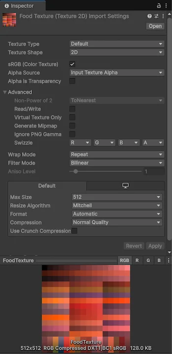

You can use C# scripts to interact with Unity’s built-in importers, or create a scripted importer to add support for files that aren’t natively supported by Unity.
Use the callbacks in the AssetPostprocessor class to add custom behavior before or after Unity starts the import process for its built-in importers. You can manipulate import settings, analyze imported assets, or generate new assets dynamically during import. Refer to Supported asset type reference for a full list of built in importers available.
The following is an example of an AssetPostprocessor script that modifies the import settings of a texture before importing it, and then applies a red color tint to the texture after importing:
using UnityEngine;
using UnityEditor;
public class CustomTextureImporter : AssetPostprocessor
{
// Increment the version number, when the AssetPostprocessors code/behavior is changed
static readonly uint k_Version = 0;
public override uint GetVersion() { return k_Version; }
void OnPreprocessTexture()
{
// Get a reference to the TextureImporter
TextureImporter importer = assetImporter as TextureImporter;
// Customize settings
importer.mipmapEnabled = false;
importer.textureType = TextureImporterType.Default;
importer.maxTextureSize = 512;
importer.wrapMode = TextureWrapMode.Repeat;
Debug.Log($"Texture '{assetPath}' has had its import settings changed in OnPreProcessTexture.");
}
void OnPostprocessTexture(Texture2D texture)
{
// Set a red color tint to the texture
Color tintColor = new(1.0f, 0.5f, 0.5f, 1.0f);
// Get the texture's pixels
Color[] pixels = texture.GetPixels();
for (int i = 0; i < pixels.Length; i++)
{
// Apply the tint color
pixels[i] *= tintColor;
}
// Set the modified pixels back to the texture
texture.SetPixels(pixels);
// Apply the changes to the texture
texture.Apply();
// Log the change
Debug.Log($"Texture '{texture.name}' has been tinted with a red color in OnPostProcessTexture.");
}
}
To use this example, place it in a new script file in somewhere your project’s Assets folder, and then add a new texture to the Assets folder. Unity then applies the settings to the texture, as shown in the following image:

To add your own support for file formats that aren’t natively supported by Unity, you can use a ScriptedImporter to write custom asset importers in C#.
A scripted importer is a class that inherits from the abstract class ScriptedImporter and has the [ScriptedImporter] attribute. This registers your custom importer to handle one or more file extensions. When Unity detects a file that matches the registered file extensions as being new or changed, it invokes the method OnImportAsset of your custom importer.
Important: Scripted importers can’t handle a file extension that Unity already natively handles. You can use the overrideExts parameter to override this behavior and add the file extension for the existing importer. For a list of files Unity natively supports, refer to Supported asset type reference.
Once you have added a ScriptedImporter script to a project, you can use it the same way as any other file type supported by Unity. For more information, refer to Introduction to importing assets.
The following code example imports asset files with the extension cube into a prefab with a cube primitive as the main asset and a default material and color. It then assigns its position from a value read from the asset file:
using UnityEngine;
using UnityEditor.AssetImporters;
using System.IO;
// The importer is registered with Unity's asset pipeline by placing the ScriptedImporter attribute on the
// CubeImporter class. The CubeImporter class implements the abstract ScriptedImporter base class.
[ScriptedImporter(1, "cube")]
public class CubeImporter : ScriptedImporter
{
public float m_Scale = 1;
// The ctx argument contains both input and output data for the import event
public override void OnImportAsset(AssetImportContext ctx)
{
var cube = GameObject.CreatePrimitive(PrimitiveType.Cube);
var position = JsonUtility.FromJson<Vector3>(File.ReadAllText(ctx.assetPath));
cube.transform.position = position;
cube.transform.localScale = new Vector3(m_Scale, m_Scale, m_Scale);
// 'cube' is a GameObject and is automatically converted into a prefab.
// Only the 'Main Asset' is eligible to become a prefab.
ctx.AddObjectToAsset("main obj", cube);
ctx.SetMainObject(cube);
var material = new Material(Shader.Find("Standard"));
material.color = Color.red;
// Assets must be assigned a unique identifier string consistent across imports.
ctx.AddObjectToAsset("my Material", material);
// Assets that are not passed into the context as import outputs must be destroyed.
var tempMesh = new Mesh();
DestroyImmediate(tempMesh);
}
}
For more information, refer to the AssetImporters.ScriptedImporter API documentation.
To create a custom import settings window for your scripted importer, create a class that inherits from ScriptedImporterEditor and decorate it with the [CustomEditor] attribute. For example:
using UnityEditor;
using UnityEditor.AssetImporters;
using UnityEditor.SceneManagement;
using UnityEngine;
[CustomEditor(typeof(CubeImporter))]
public class CubeImporterEditor: ScriptedImporterEditor
{
public override void OnInspectorGUI()
{
var colorShift = new GUIContent("Color Shift");
var prop = serializedObject.FindProperty("m_ColorShift");
EditorGUILayout.PropertyField(prop, colorShift);
base.ApplyRevertGUI();
}
}
When creating custom AssetPostprocessor or ScriptedImporter scripts, ensure that your import code is deterministic. A deterministic importer always produces the same output from the same input and dependencies. Unregistered dependencies or non-deterministic code can cause the Asset Pipeline to cache incorrect results, leading to inconsistent builds across machines or when the active build target changes.
If your import code reads from external files or depends on other environment states that aren’t covered by Unity’s automatic import dependencies, you must register those dependencies. Otherwise, Unity will not reimport the asset if those dependencies change. For the active build target used for the import, read selectedBuildTarget on the import context instead of tracking the platform manually.
For file dependencies, use context.DependsOnArtifact to register them. If the configuration file changes, Unity automatically reimports the dependent asset.
public class ConfigDependentPostprocessor : AssetPostprocessor
{
void OnPreprocessTexture()
{
// Register the dependency before reading the asset
context.DependsOnArtifact("Assets/Config/TextureImportConfig.asset");
// Read config and apply settings...
}
}
For import logic that depends on the active build target (for example, platform-specific compression or paths), avoid compile-time constants such as #if UNITY_EDITOR_WIN. Use runtime checks against the build target Unity is importing for. The approach depends on if you’re using a ScriptedImporter or an AssetPostprocessor:
selectedBuildTarget from the AssetImportContext passed into OnImportAsset.context instance.Accessing selectedBuildTarget registers an import dependency on that build target, so Unity reimports when the target relevant to the import changes.
using UnityEditor;
using UnityEngine;
public class PlatformAwarePostprocessor : AssetPostprocessor
{
void OnPreprocessTexture()
{
switch (context.selectedBuildTarget)
{
case BuildTarget.StandaloneWindows64:
// Apply settings for Windows standalone imports
break;
case BuildTarget.StandaloneOSX:
// Apply settings for macOS standalone imports
break;
default:
break;
}
}
}
When you change the behavior of a ScriptedImporter or an AssetPostprocessor, bump its version to invalidate the previously cached import results. If you don’t bump the version, next time the importer runs, it might reuse invalid import results.
[ScriptedImporter] attribute whenever importer code changes.GetVersion and return a new value when the AssetPostprocessor code changes.The CustomTextureImporter example under Scripting with built-in importers shows a GetVersion implementation you can follow for postprocessors.
Custom import code that relies on time, random numbers, unordered collections, or asynchronous timing produces different results on each run.
DateTime.UtcNow to stamp assets during import. If you need to log import times, write to a log file outside the asset pipeline.Dictionary or HashSet collections produces elements in an undefined order. Use explicitly sorted collections, such as List or arrays, to guarantee a consistent processing order.async tasks to process subassets, sort or synchronize the tasks before combining their results instead of relying on the order in which they finish.class OrderedCollectionProcessor : AssetPostprocessor
{
void OnPostprocessModel(GameObject model)
{
var materialList = new List<Material>();
// Populate list...
// Sort explicitly by a deterministic property
materialList.Sort((a, b) => string.Compare(a.name, b.name, System.StringComparison.Ordinal));
foreach (var material in materialList)
{
// Modification order is now deterministic
}
}
}